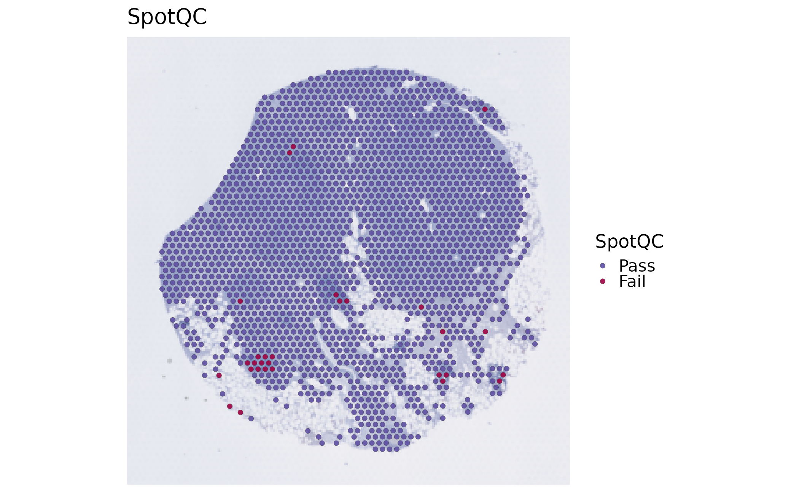
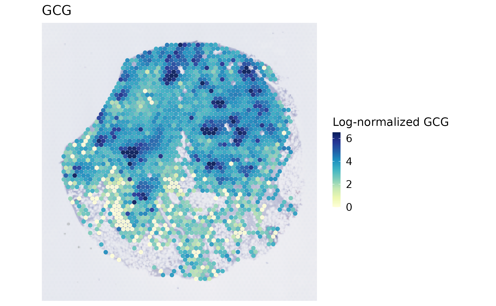

Spatial imports and standard workflow methods
Source:vignettes/spatial-platform-workflows.Rmd
spatial-platform-workflows.RmdThis page helps you choose the right input for a spatial method. First run the complete bundled Visium example: validate IDs and coordinates, calculate limited-assay QC, normalize without changing counts, inspect a real expression map, and save/reload the result. Then adapt the import section to an existing Visium, Visium HD, or Xenium vendor output directory.
The main spatial workflow provides the analysis path. The framework bridges page verifies conversion to SpatialExperiment and checks the optional Giotto backend.
Run a complete input check
visium_human_pancreas_sub comes from sample GSM8058244
(PanIN-LG2), study GSE254829.
It contains all 1,986 packaged tissue spots and 5,000 genes shared with
the bundled pancreas reference. The package has already selected those
genes; this page does not reduce the object further.
coda_label is supplied microanatomical annotation, not a
predicted single-cell type.
library(scop)
data(visium_human_pancreas_sub)
visium <- visium_human_pancreas_sub
assay_name <- "Spatial"
image_name <- "slice1"
counts <- GetAssayData5(visium, assay = assay_name, layer = "counts")
raw_coordinates <- SpatialCoordinates(visium, image = image_name, space = "raw")
stopifnot(
identical(dim(counts), c(5000L, 1986L)),
!anyDuplicated(colnames(counts)),
identical(rownames(visium@meta.data), colnames(visium)),
setequal(colnames(counts), raw_coordinates$data$cell_id),
all(is.finite(as.matrix(raw_coordinates$data[, c("x", "y")]))),
all(is.finite(counts@x)), all(counts@x >= 0),
all(counts@x == floor(counts@x))
)
input_receipt <- data.frame(
source = "GSE254829 / GSM8058244 / complete bundled object",
observations = ncol(counts), features = nrow(counts),
observation_unit = "spot", assay = assay_name, layer = "counts",
image = image_name, coordinate_space = "raw", coordinate_units = "pixel",
total_selected_gene_counts = sum(counts)
)
input_receipt
#> source observations features
#> 1 GSE254829 / GSM8058244 / complete bundled object 1986 5000
#> observation_unit assay layer image coordinate_space coordinate_units
#> 1 spot Spatial counts slice1 raw pixel
#> total_selected_gene_counts
#> 1 8220223
raw_coordinates$source
#> $image
#> [1] "slice1"
#>
#> $coord.cols
#> [1] "x" "y"
#>
#> $image_policy
#> [1] "strict"
#>
#> $coordinate_space
#> [1] "raw"
#>
#> $image_class
#> [1] "VisiumV2"
#> attr(,"package")
#> [1] "Seurat"
#>
#> $image_width
#> [1] 600
#>
#> $image_height
#> [1] 340
#>
#> $scale_name
#> [1] "lowres"
#>
#> $scale_factor
#> [1] 0.078125
#>
#> $coordinate_contract_version
#> [1] 3
SeuratObject::Layers(visium[[assay_name]])
#> [1] "counts"The count total describes only the packaged genes. The ID checks prevent an expression column from being paired with another spot’s coordinates. The fixed dimension check is specific to this example; replace it with your own expected dimensions. Keep the general ID, finite-coordinate, and raw-count checks when changing datasets.
Label QC problems without discarding observations
A gene-filtered assay cannot reproduce whole-transcriptome library complexity or mitochondrial percentages. Here, UMI and gene thresholds are an executable example on the retained genes, not validated tissue-QC cutoffs. For real QC, import the complete raw expression assay and choose thresholds after examining its distributions and tissue image.
qc_parameters <- list(qc_metrics = c("umi", "gene"), UMI_threshold = 500,
gene_threshold = 200, return_filtered = FALSE)
visium_qc <- do.call(RunSpotQC, c(
list(object = visium, assay = assay_name, verbose = FALSE), qc_parameters
))
qc_summary <- as.data.frame(table(visium_qc$SpotQC, useNA = "ifany"))
colnames(qc_summary) <- c("status", "spots")
qc_summary
#> status spots
#> 1 Pass 1957
#> 2 Fail 29
summary(visium_qc@meta.data[, c("nCount_Spatial", "nFeature_Spatial")])
#> nCount_Spatial nFeature_Spatial
#> Min. : 36 Min. : 32
#> 1st Qu.: 1865 1st Qu.:1157
#> Median : 3370 Median :1796
#> Mean : 4139 Mean :1873
#> 3rd Qu.: 6051 3rd Qu.:2604
#> Max. :18957 Max. :4232
stopifnot(
identical(colnames(visium_qc), colnames(visium)),
isTRUE(all.equal(GetAssayData5(visium_qc, assay = assay_name, layer = "counts"), counts)),
sum(qc_summary$spots) == ncol(visium)
)Pass means both requested thresholds passed;
Fail means at least one failed. An NA result
is unresolved, not a pass. All observations remain in this example
because return_filtered = FALSE, so you can inspect
failures before deciding whether to exclude them.
SpatialSpotPlot(visium_qc, group.by = "SpotQC", image = image_name)
Normalize and inspect a measured feature
visium_normalized <- Seurat::NormalizeData(
visium_qc, assay = assay_name, normalization.method = "LogNormalize",
scale.factor = 10000, verbose = FALSE
)
stopifnot(isTRUE(all.equal(
GetAssayData5(visium_normalized, assay = assay_name, layer = "counts"), counts
)))
SeuratObject::Layers(visium_normalized[[assay_name]])
#> [1] "counts" "data"
feature <- "GCG"
stopifnot(feature %in% rownames(counts))
feature_values <- GetAssayData5(visium_normalized, assay = assay_name, layer = "data")[feature, ]
data.frame(feature = feature, spots_with_counts = sum(counts[feature, ] > 0),
minimum_log_expression = min(feature_values),
maximum_log_expression = max(feature_values))
#> feature spots_with_counts minimum_log_expression maximum_log_expression
#> 1 GCG 1861 0 7.154526
SpatialSpotPlot(visium_normalized, features = feature, assay = assay_name,
layer = "data", image = image_name, palette = "YlGnBu",
legend.title = "Log-normalized GCG")
This map shows measured GCG expression after library-size scaling and
log1p transformation over the retained genes. It is not a
deconvolution result or a cell-type call. Recompute normalization from a
complete assay for production analysis; values normalized over different
gene universes need not be comparable. The counts equality
check confirms that the raw source was preserved.
Save, reload, and verify
output_dir <- Sys.getenv("SCOP_PLATFORM_OUTPUT_DIR", file.path(tempdir(), "scop-platform"))
dir.create(output_dir, recursive = TRUE, showWarnings = FALSE)
result_file <- file.path(output_dir, "panin-input-qc-normalized.rds")
saveRDS(list(object = visium_normalized, input = input_receipt,
qc_parameters = qc_parameters, qc_summary = qc_summary,
coordinates = raw_coordinates, session = utils::sessionInfo()), result_file)
reloaded <- readRDS(result_file)
reload_checks <- c(
observations = identical(colnames(reloaded$object), colnames(visium)),
counts = isTRUE(all.equal(
GetAssayData5(reloaded$object, assay = assay_name, layer = "counts"), counts)),
qc_labels = identical(reloaded$object$SpotQC, visium_normalized$SpotQC),
coordinates = identical(
SpatialCoordinates(reloaded$object, image = image_name, space = "raw"), raw_coordinates)
)
data.frame(check = names(reload_checks), passed = unname(reload_checks))
#> check passed
#> 1 observations TRUE
#> 2 counts TRUE
#> 3 qc_labels TRUE
#> 4 coordinates TRUE
stopifnot(all(reload_checks))The build writes to a temporary directory. Set
SCOP_PLATFORM_OUTPUT_DIR to a new persistent project
directory before running this code on your data. Use
reloaded$object in either plotting call above; plotting
does not rerun QC or normalization. Save the input receipt alongside
figures so their units and selected assay remain recoverable.
Platform contracts at a glance
| Input | Observation | Typical assay/image | Coordinate meaning | Natural SCOP entry |
|---|---|---|---|---|
| Visium | spot |
Spatial / slice1
|
full-resolution image pixels; display scale is separate |
SpatialSpotPlot(), spot QC, Moran/Geary, domain
clustering, spot deconvolution |
| Visium HD | bin |
Spatial.008um or Spatial.016um / matching
image |
full-resolution pixels for the selected bin resolution |
SpatialSpotPlot(), resolution-aware BayesSpace,
spatial-variable features |
| Xenium | segmented cell | vendor assay / fov
|
vendor segmentation coordinates in microns |
SpatialCellPlot(), cell-level context or
communication |
The exact assay and image names are read from the loaded object; do not copy a name from a different resolution or sample. Check the selected context before calling a method:
SpatialCoordinates(visium, image = image_name, space = "raw")$source
#> $image
#> [1] "slice1"
#>
#> $coord.cols
#> [1] "x" "y"
#>
#> $image_policy
#> [1] "strict"
#>
#> $coordinate_space
#> [1] "raw"
#>
#> $image_class
#> [1] "VisiumV2"
#> attr(,"package")
#> [1] "Seurat"
#>
#> $image_width
#> [1] 600
#>
#> $image_height
#> [1] 340
#>
#> $scale_name
#> [1] "lowres"
#>
#> $scale_factor
#> [1] 0.078125
#>
#> $coordinate_contract_version
#> [1] 3
SeuratObject::DefaultAssay(visium)
#> [1] "Spatial"
SeuratObject::Images(visium)
#> [1] "slice1"SCOP keeps spot IDs/cell IDs aligned with expression columns. If
several images cover one sample, analysis and plotting require an
explicit selection or an explicit named sample-to-image map. A display
lowres/hires scale never changes raw distances
and does not turn pixels into microns.
Import existing vendor output
Set one or more of SCOP_VISIUM_DIR,
SCOP_VISIUM_HD_DIR, and SCOP_XENIUM_DIR to
existing, unpacked vendor output directories before running this
section. Visium needs the expression matrix plus the
spatial/ outputs; HD needs the selected binned outputs and
matching images; Xenium needs expression and existing cell segmentation.
Do not point at an archive. No path is configured by default, so the
table explicitly reports not_run.
vendor_paths <- c(
visium = Sys.getenv("SCOP_VISIUM_DIR"),
visium_hd = Sys.getenv("SCOP_VISIUM_HD_DIR"),
xenium = Sys.getenv("SCOP_XENIUM_DIR")
)
vendor_objects <- list()
import_receipts <- lapply(names(vendor_paths), function(technology) {
path <- vendor_paths[[technology]]
status <- "not_run"
reason <- "No vendor directory configured"
observations <- NA_integer_
if (nzchar(path)) {
result <- tryCatch({
if (!dir.exists(path)) stop("Configured vendor directory does not exist")
ReadSpatialData(data.dir = path, technology = technology,
bin.size = c(8, 16), sample_id = paste0(technology, "_sample1"))
}, error = function(e) e)
if (inherits(result, "error")) {
status <- "failed"
reason <- conditionMessage(result)
} else {
vendor_objects[[technology]] <<- result
status <- "completed"
reason <- "Vendor import and SCOP context validation completed"
observations <- ncol(result)
}
}
data.frame(technology = technology, status = status, observations = observations,
reason = reason)
})
import_receipts <- do.call(rbind, import_receipts)
import_receipts
#> technology status observations reason
#> 1 visium not_run NA No vendor directory configured
#> 2 visium_hd not_run NA No vendor directory configured
#> 3 xenium not_run NA No vendor directory configuredOnly completed means an import ran. For example, after a
successful Visium import, use
visium <- vendor_objects$visium, inspect its
images/assays, and repeat the input checks with its actual dimensions.
If your matrix filename is nonstandard, pass Seurat’s
filename = argument through ReadSpatialData();
the GSE254829 source archive uses
filename = "filtered_feature_bc_matrix". For HD, inspect
every image and its matching assay separately: one resolution is not
interchangeable with another.
ReadSpatialData() delegates file parsing to Seurat and
records import provenance under
object@misc$scop_spatial_input. It validates that each
returned image, assay, observation set, resolution, and coordinate-unit
label agree. It does not normalize counts, segment cells, or infer cell
types.
Public data sources for testing the input formats are available from the 10x Genomics Visium datasets, the 10x Visium HD human-pancreas example, the 10x Visium HD developer example data, and 10x Xenium Explorer demo datasets. Download and unpack them outside the package; do not hard-code a machine path in a reproducible article.
Optional method recipes: check availability first
The complete input/QC/normalization path above is evaluated. The following backend-specific recipes are not executed by this page: several require separate installations, another sample, a matched reference, or a costly model fit. This table measures installation status and explicitly distinguishes it from execution. A package being installed does not prove that its model ran.
backend_packages <- c("SpaNorm", "Banksy", "BayesSpace", "PRECAST", "spacexr")
backend_status <- data.frame(
package = backend_packages,
installed = vapply(backend_packages, requireNamespace, logical(1), quietly = TRUE),
version = vapply(backend_packages, function(p) {
if (requireNamespace(p, quietly = TRUE)) as.character(packageVersion(p)) else NA_character_
}, character(1)),
execution = "not_run: optional recipe on this page"
)
backend_status
#> package installed version execution
#> SpaNorm SpaNorm TRUE 1.6.0 not_run: optional recipe on this page
#> Banksy Banksy TRUE 1.8.1 not_run: optional recipe on this page
#> BayesSpace BayesSpace TRUE 1.22.0 not_run: optional recipe on this page
#> PRECAST PRECAST TRUE 1.9 not_run: optional recipe on this page
#> spacexr spacexr TRUE 1.4.0 not_run: optional recipe on this pageThe main workflow contains executable spatial-feature and reference-based examples. Use its execution receipts to establish which methods actually ran.
Visium and Visium HD: keep counts and normalized data separate
Raw counts are the input for count-dependent QC and methods that
model sampling depth. Normalized/log-transformed data are appropriate
for expression-level plots and methods whose contract asks for a
normalized layer. SpaNorm is a separate normalization
stage; it does not replace the original count source.
stopifnot(requireNamespace("SpaNorm", quietly = TRUE),
requireNamespace("Banksy", quietly = TRUE))
normalized <- RunStandardWorkflow(
visium,
workflow = "spatial",
assay = "Spatial",
image = "slice1",
normalization_method = "SpaNorm",
spot_qc_params = qc_parameters,
spanorm_params = list(new_assay = "SpaNormAnalysis"),
do_spatial_cluster = TRUE,
spatial_cluster_method = "BANKSY",
do_deconvolution = FALSE
)
normalized@tools$run_standard_spatial_workflow$stages
# A separate count-dependent method; q is a required choice, not an inferred truth.
stopifnot(requireNamespace("BayesSpace", quietly = TRUE))
bayesspace <- RunBayesSpace(
normalized,
assay = "Spatial", # this assay must retain the original counts
image = "slice1",
q = 4,
store_sce = FALSE
)
table(bayesspace$BayesSpace_cluster)The workflow attaches matching original counts when needed for QC and
uses the separate normalized assay for downstream expression
preprocessing. It rejects an explicit
do_normalization = FALSE conflict with
SpaNorm. Do not relabel normalized values as counts.
RunBayesSpace() has no layer argument: its
selected assay must contain the intended counts. Inspect the domain map
and compare justified choices of q; four domains in this
recipe is a parameter, not a biological conclusion.
Standard methods by platform
For a Visium spot or HD bin, a compact method selection is:
baseline <- RunStandardWorkflow(
visium,
workflow = "spatial",
assay = "Spatial",
image = "slice1",
do_spot_qc = TRUE,
spot_qc_params = qc_parameters,
do_spatial_variable_features = TRUE,
spatial_variable_features_params = list(method = "moran", nfeatures = nrow(visium[["Spatial"]])),
do_spatial_cluster = FALSE,
do_deconvolution = FALSE
)
baseline@tools$run_standard_spatial_workflow$stages
stopifnot(requireNamespace("Banksy", quietly = TRUE))
banksy <- RunStandardWorkflow(
visium,
workflow = "spatial",
assay = "Spatial",
image = "slice1",
do_spot_qc = FALSE,
do_spatial_variable_features = FALSE,
do_spatial_cluster = TRUE,
spatial_cluster_method = "BANKSY",
spatial_cluster_params = list(lambda = 0.2, resolution = 0.6),
do_deconvolution = FALSE
)
banksy@tools$run_standard_spatial_workflow$stages
table(banksy$BANKSY_cluster)
SpatialSpotPlot(banksy, group.by = "BANKSY_cluster", image = "slice1")BayesSpace is the spot/bin array branch;
spatial_q or BayesSpace’s q controls the
number of domains. BANKSY uses its own resolution
parameters. SmoothClust accepts a requested
n_clusters and its smoothing parameters. Segmented cell
observations are not silently sent through spot deconvolution or
BayesSpace; use cell-level methods and plots instead.
Multi-sample PRECAST integration
Integration needs a sample label and a covering image per sample. With a merged object, the image map names are the merged object’s image keys. With list input, the map names refer to the original list element names before Seurat renames duplicate image keys.
Use two independently acquired samples saved as Seurat RDS files. Set the two environment variables below to those files; do not split or duplicate this single bundled section to manufacture an integration result. Inspect each object and adjust the assay/image map before running.
stopifnot(requireNamespace("PRECAST", quietly = TRUE))
sample_files <- c(S1 = Sys.getenv("SCOP_SPATIAL_S1_RDS"),
S2 = Sys.getenv("SCOP_SPATIAL_S2_RDS"))
stopifnot(all(nzchar(sample_files)), all(file.exists(sample_files)),
length(unique(normalizePath(sample_files))) == 2L)
visium_S1 <- readRDS(sample_files[["S1"]])
visium_S2 <- readRDS(sample_files[["S2"]])
stopifnot(inherits(visium_S1, "Seurat"), inherits(visium_S2, "Seurat"))
lapply(list(S1 = visium_S1, S2 = visium_S2), SeuratObject::Images)
integrated <- RunSpatialIntegration(
object = list(S1 = visium_S1, S2 = visium_S2),
method = "PRECAST",
assay = "Spatial",
layer = "counts",
image = c(S1 = "slice1", S2 = "slice1"),
store_object = FALSE
)
integrated@tools$SpatialIntegration$summary
SeuratObject::Images(integrated)
SpatialIntegrationPlot(integrated, plot_type = "spatial")
saveRDS(integrated, "precast-integration.rds")The plotting call resolves the images in the merged object. Inspect
SeuratObject::Images(integrated) before supplying an
explicit plotting map: duplicate input names such as slice1
may have been renamed during merging. Do not reuse the input-list map as
a merged-object map.
The PRECAST package is an execution-time optional dependency. The
template is not a successful run unless PRECAST is installed and the
input objects exist. store_object = FALSE omits only the
complete native PRECAST object; domains, embedding, aligned coordinates,
parameters, source information, and standard plots remain stored. Keep
the default TRUE when a later native PRECAST analysis needs
the full object.
PRECAST receives a fresh backend object built from the selected
assay and layer, which must contain finite,
non-negative integer counts; it normalizes these counts internally. The
default adjacency uses six nearest neighbors in the selected coordinate
space
(adj_params = list(type = "fixed_number", number = 6)).
SCOP constructs this graph with its shared exact KNN implementation and
adapts it to PRECAST’s column-neighbor matrix convention. Each sample
must retain more spots than the requested neighbor count. PRECAST’s
fixed-distance Visium/ST mode expects array indices and is rejected for
SCOP’s analysis coordinates. Empty or invalid graphs stop before
training. Effective backend arguments and per-sample nonzero edge counts
are saved under the method bundle’s parameters.
For SpatialCellChat, verify the physical calibration before
interpreting distance-dependent communication. The current wrapper has a
legacy ordinary Visium fallback of
65 / spot_diameter_fullres and tol = 32.5;
these are implementation assumptions, not the current platform
specification. 10x
specifies a 55-micron diameter for ordinary Visium spots. For
confirmed 55-micron spots with full-resolution pixel coordinates, supply
ratio = 55 / spot_diameter_fullres explicitly and choose a
justified tol in microns. Do not apply a full-resolution
ratio to resized-image coordinates. Visium HD needs its own calibrated
ratio and tolerance for the chosen bin or cell size; an
ordinary spot-diameter conversion does not apply. Imported HD provenance
and assay names such as Spatial.008um inform automatic
technology detection; an explicit technology = "visium_hd"
is needed when that evidence is absent.
Deconvolution and cell2location storage choices
Spot deconvolution is reference-dependent and estimates composition
per spot; it does not turn a spot into a segmented cell.
RunRCTD(), RunSPOTlight(), and
RunCell2location() preserve their own result semantics. Use
SpatialDeconvolutionPlot() or
Cell2locationPlot() after checking the stored result.
Cell2location q05 abundance and normalized proportions are distinct; the
abundance view uses its native range rather than a forced 0–1 scale.
Cell2location plotting matrices retain the original spot IDs. Spots
excluded from modeling, such as zero-count observations, have
NA values rather than zero abundance. The saved
cells field identifies modeled spots, and
input_summary$dropped_spots records filtered observations.
Historical compact results are expanded only when those records explain
all missing rows; missing predictions or unknown IDs are not silently
accepted. An explicit lower_cutoff,
upper_cutoff, or quantile control overrides the default
matrix-wide display range. With a one-sided override, each panel keeps
the remaining bound computed by SpatialSpotPlot(); specify
both cutoffs when you want identical explicit limits across panels.
combine changes only the return form, including for the
dominant point map.
For a complete reference-backed RCTD run, use the main workflow. Choose a reference
with compatible gene identifiers and biologically relevant labels, and
retain its count assay. The stored model result, not an invented
component matrix, is the input to
SpatialDeconvolutionPlot(). For a saved cell2location
result, verify that input_summary, modeled
cells, and the selected abundance/proportion matrix are
present before calling Cell2locationPlot().
Common errors and how to recover
| Symptom | Check and recovery |
|---|---|
| Vendor directory does not exist or a matrix is missing | Unpack the archive; point at the vendor output directory; check the actual matrix filename and loader arguments |
| More than one image or HD resolution | List images and matching assays; select the intended pair explicitly, one resolution at a time |
| Image IDs are absent from the assay | Compare IDs and sample/resolution provenance; choose the matching assay instead of silently taking an intersection |
| QC labels are unexpectedly good or bad | Check the gene universe and count layer; inspect distributions and tissue; do not apply whole-transcriptome thresholds to a selected-gene assay |
| SpaNorm conflicts with normalization settings | Remove do_normalization = FALSE when requesting SpaNorm
and preserve the original count assay |
| A backend is installed but no result is present | Read the actual workflow stage status/reason; package availability is not a completed analysis |
| PRECAST adjacency is empty or invalid | Verify raw coordinates, sample/image coverage, and more than six spots per sample for the default six-neighbor graph |
| Spots have missing composition values | Check the producer’s modeled cells and dropped-spot record;
NA means unmodeled/missing, not zero abundance |
Validation and analysis receipts
Acceptance runs use public slide data outside the package: developer fixtures check format and computation rather than biological performance on production slides, and public slide data are not redistributed with scop.
For a new dataset, preserve the following in the analysis receipt:
- platform and observation unit (
spot,bin, orcell); - assay and layer, selected image, coordinate columns, coordinate space, and physical units when known;
- raw-count versus normalized-expression input decisions;
- sample-to-image map for every sample;
- stage status and backend versions for methods that actually ran.
data.frame(
package = c("scop", "Seurat", "SeuratObject", "Matrix"),
version = vapply(c("scop", "Seurat", "SeuratObject", "Matrix"),
function(p) as.character(utils::packageVersion(p)), character(1))
)
#> package version
#> scop scop 0.9.2
#> Seurat Seurat 5.6.0
#> SeuratObject SeuratObject 5.4.0
#> Matrix Matrix 1.7.5Build provenance
This receipt belongs to the actual rendered source and retained observations. Save it beside the exported object when adapting the workflow.
source_revision <- Sys.getenv("GITHUB_SHA")
if (!nzchar(source_revision) && nzchar(Sys.which("git"))) {
source_revision <- system2("git", c("rev-parse", "HEAD"), stdout = TRUE,
stderr = FALSE)[1]
}
build_receipt <- data.frame(
article = "spatial-platform-workflows", built_utc = format(Sys.time(), tz = "UTC", usetz = TRUE),
source_revision = source_revision,
source_has_local_changes = if (nzchar(Sys.which("git")))
length(system2("git", c("status", "--porcelain"), stdout = TRUE,
stderr = FALSE)) > 0 else NA,
article_md5 = unname(tools::md5sum(knitr::current_input(dir = TRUE))),
R = as.character(getRversion()), scop = as.character(utils::packageVersion("scop")),
retained_observations = ncol(visium_normalized), genes = nrow(visium_normalized)
)
build_receipt
#> article built_utc
#> 1 spatial-platform-workflows 2026-10-10 12:11:07 UTC
#> source_revision source_has_local_changes
#> 1 151e7134c597a318db23aacdc01739f82fa44758 FALSE
#> article_md5 R scop retained_observations genes
#> 1 857e67c53d4bc4a42ef8c52375db5a5d 4.6.1 0.9.2 1986 5000
utils::write.csv(build_receipt, file.path(output_dir, "build-receipt.csv"), row.names = FALSE)
writeLines(capture.output(sessionInfo()), file.path(output_dir, "session-info.txt"))